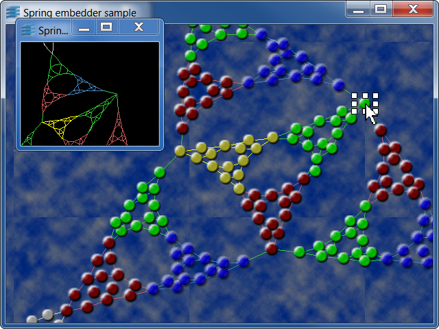

springThis sample shows an animated layout on a grapher.

This sample implements a spring-embedder that performs an animated
layout on the contents of a grapher. The algorithmic part of the spring-embedder
is inspired from the force-directed layout that is provided in the JDK release.
Since refinements of this layout are beyond the scope of this sample, the
implementation does not perform oscillation or rotation detection. Also, the
translation threshold, that is how far a node can be moved at each iteration
of the layout, is defined by a constant (MaxNodeTranslation).
This sample covers the following topics:
LayoutHandler::NodeInfo) that is used
to store the sum of the force vectors applied by its connected links and neighbouring nodes.
This structure is also used to cache the center of the node, which is intensively used
throughout an iteration of the algorithm and might be expensive to compute if the
graphic object is complex.
IlvGraphSelectInteractor to perform
additional operations when graphic objects are selected and edited. In the case of
this sample, the subclass is used to run the layout whenever a node is moved. It
also ensures that selected nodes are not moved by the layout.
IlvGrapherPin that provides a connection
point located at the center of a node.
The sample shows two windows connected to the same grapher. The overview view shows the grapher contents with an unzoom level. The main view displays the graph with no initial transformer. On top of the predefined grapher accelerators, the following interactions are available:
The spring executable can be invoked with a parameter that gives the ilv file
that is read by the grapher. All nodes stored in the file are moved to the layer
of index 1, whereas all links are moved to the layer of index 0.
Three predefined data files are available in
[ILVHOME]/samples/grapher/spring/data: balls.ilv
(the default file if no parameter is given), circle.ilv, and flower.ilv
IlvGrapherIlvLinkImageIlvGraphSelectInteractorIlvGrapherPin